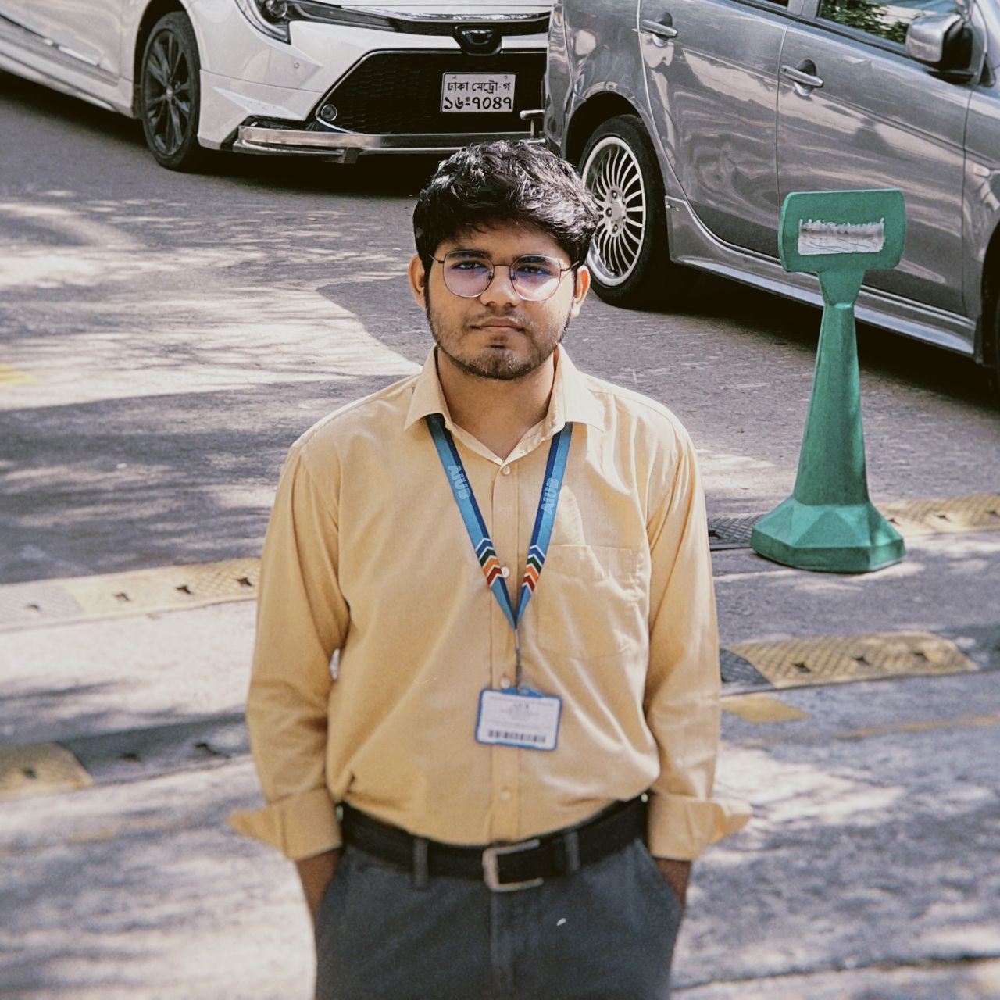

Dhaka, Bangladesh
Hello! My name is Abir Ahosan Ratul, and I am a 4th year Computer Science and Engineering (CSE) student currently in my 10th semester. I have a strong interest in technology and problem-solving, and I am continuously working to improve my programming skills.
I have basic knowledge of C++, Python, and C#, and I am especially interested in the field of Data Science. I enjoy exploring how data can be analyzed to find meaningful insights and support decision-making.
My goal is to build a career in Data Science and hopefully work abroad in the future. I am a kind and calm person who believes in continuous learning and self-improvement.
Besides coding, I enjoy drawing and spending my free time watching anime, as well as reading manga and manhwa.